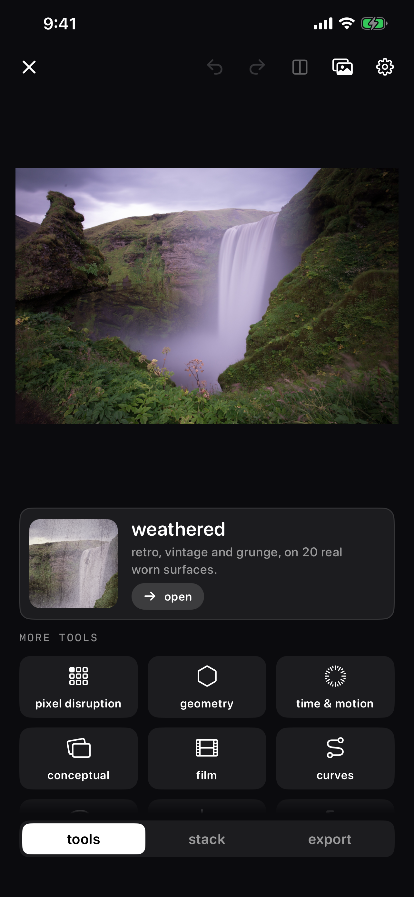
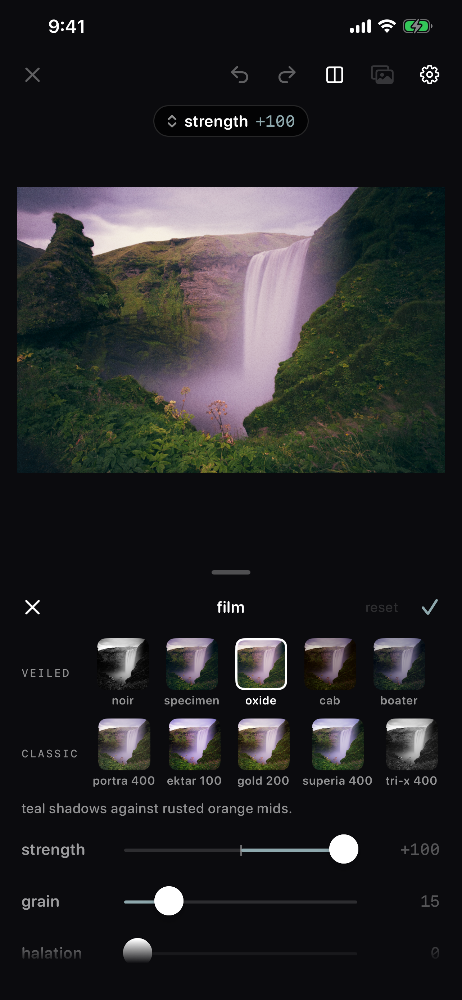
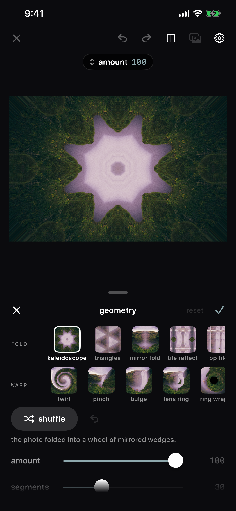
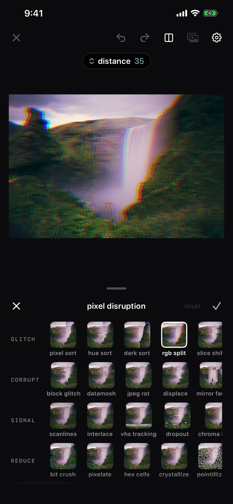
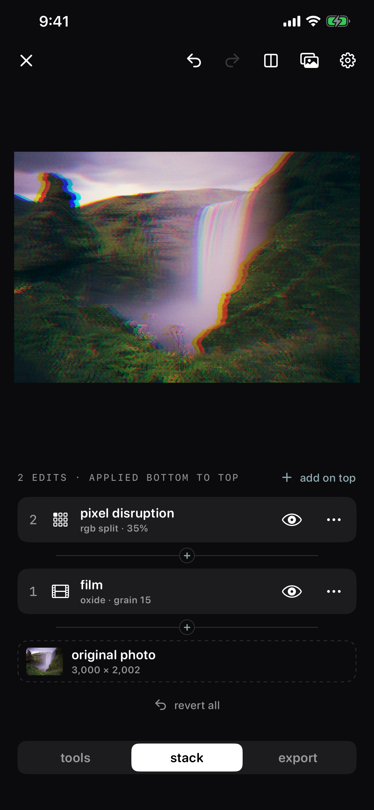
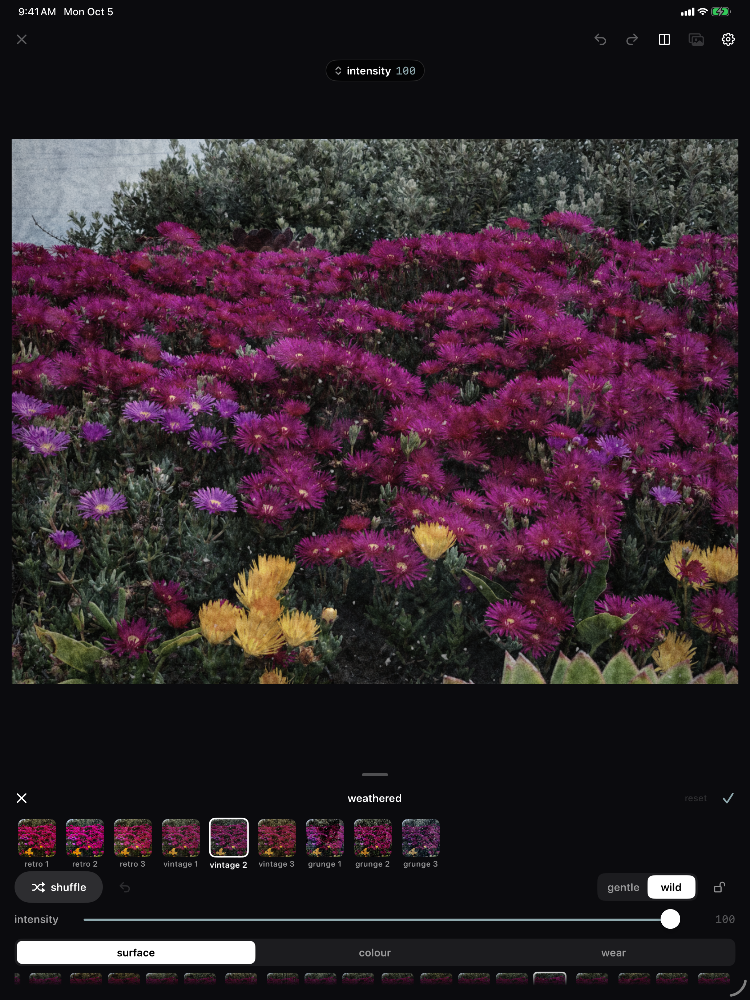
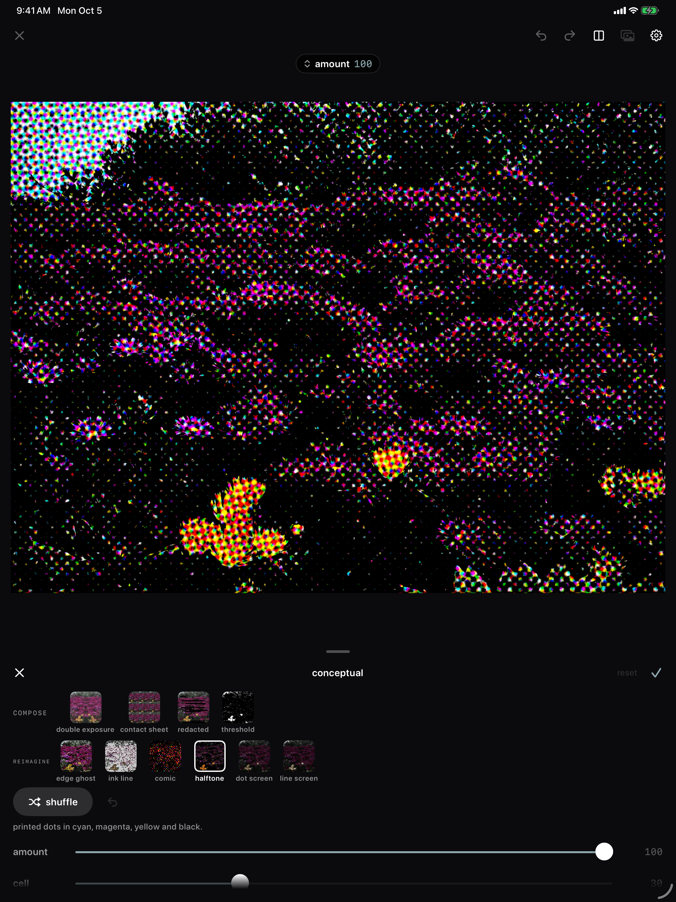

A photo editor for the weird stuff — stacked, revisited, and never final until you say so.
Graded is an experimental photo editor. Open any photo and work it over with a stack of tools — film stocks, real photographed grunge textures, pixel sorting, kaleidoscopes, halftones — where every step stays in the stack to revisit, hide, or remove at any time. When it's done, export with or without a white mat.
iPhone





iPad


Every tool you apply stays in the stack. Reopen it, tweak it, hide it, or delete it whenever you like.
Retro, vintage, and grunge looks built on twenty photographs of real worn surfaces.
Pixel sort, RGB split, kaleidoscope, mirror folds, long exposure, zoom burst, halftone, and dozens more, with Shuffle to roll a surprise.
Film stocks with grain and halation, tone curves, an HSL mixer, and gradient-map looks like infrared and cyanotype.
Keep Exploring
Back to the photo apps